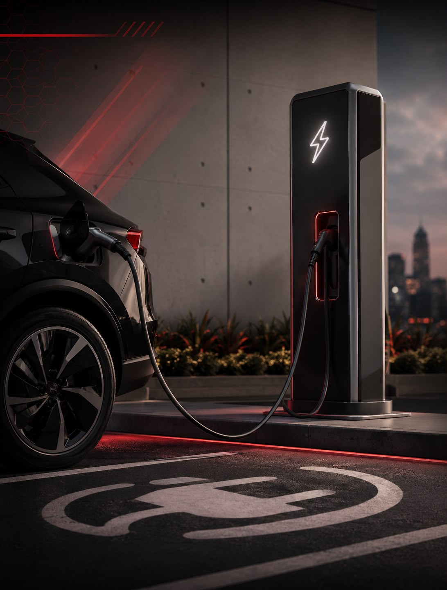

Sem Parar adiciona busca de eletropostos e rotas para EVs no ChatGPT

A Sem Parar, empresa conhecida pelo pagamento automático de pedágios e estacionamentos, ampliou seu portfólio de serviços com uma novidade voltada a quem dirige carro elétrico: agora é possível buscar eletropostos e planejar rotas direto pelo ChatGPT.
A ideia é simplificar a vida de quem tem elétrico e precisa encontrar pontos de recarga no caminho — hoje um dos principais desafios de quem migra pra esse tipo de veículo no Brasil. Ao integrar a busca de eletropostos a uma ferramenta já usada no dia a dia, a Sem Parar aposta em reduzir esse atrito.
Pra Fox Rodas e Pneus e Fox Automóveis, que já acompanham de perto a chegada dos elétricos ao mercado local, esse tipo de solução de infraestrutura é um bom termômetro de como a experiência de quem dirige elétrico tende a melhorar nos próximos anos.